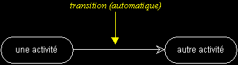
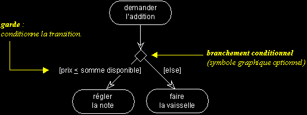
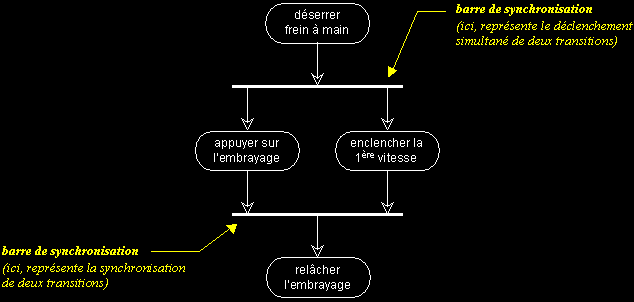
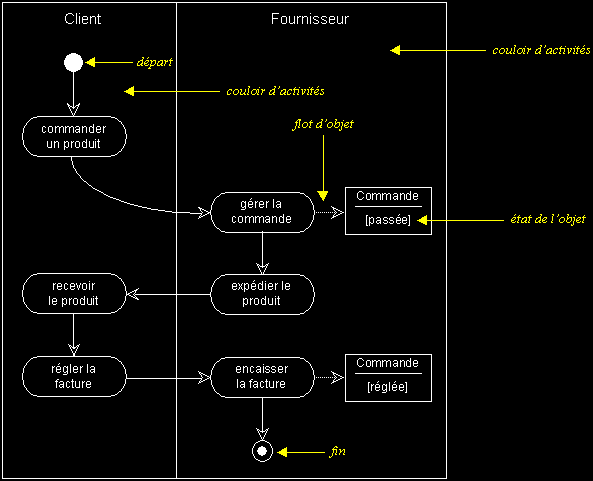

|
|
|
Les vues dynamiques d'UML (suite...)
DIAGRAMME D'ACTIVITES
q
Diagramme d'activités : sémantique
- UML permet de représenter graphiquement le comportement d'une méthode ou le déroulement d'un cas d'utilisation, à l'aide de diagrammes d'activités (une variante des diagrammes d'états-transitions).
- Une activité représente une exécution d'un mécanisme, un déroulement d'étapes séquentielles.
- Le passage d'une activité vers une autre est matérialisé par une transition.
- Les transitions sont déclenchées par la fin d'une activité et provoquent le début immédiat d'une autre (elles sont automatiques).
- En théorie, tous les mécanismes dynamiques pourraient être décrits par un diagramme d'activités, mais seuls les mécanismes complexes ou intéressants méritent d'être représentés.
activités et transition, notation :

Pour représenter des transitions conditionnelles, utilisez des gardes (expressions booléennes exprimées en langage naturel), comme dans l'exemple suivant :

q Synchronisation
Il est possible de synchroniser les transitions à l'aide des "barres de synchronisation" (comme dans les diagrammes d'états-transitions).
Une barre de synchronisation permet d'ouvrir et de fermer des branches parallèles au sein d'un flot d'exécution :
- Les transitions qui partent d'une barre de synchronisation ont lieu en même temps.
- On ne franchit une barre de synchronisation qu'après réalisation de toutes les transitions qui s'y rattachent.
L'exemple suivant illustre l'utilisation des barres de synchronisation :

q Couloirs d'activités
Afin d'organiser un diagramme d'activités selon les différents responsables des actions représentées, il est possible de définir des "couloirs d'activités".
Il est même possible d'identifier les objets principaux, qui sont manipulés d'activités en activités et de visualiser leur changement d'état.

|
|
|